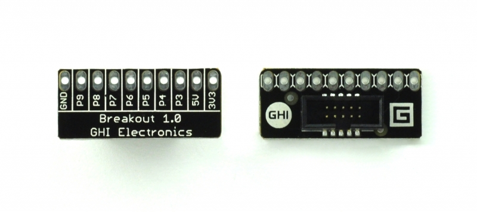
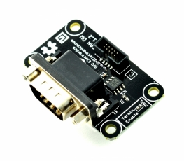
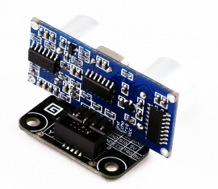
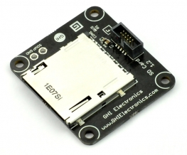
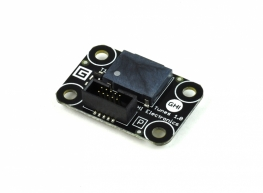
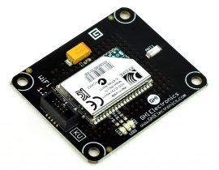

.NET Gadgeteer Modules
This page lists all .NET Gadgeteer modules and how they can be used with TinyCLR OS. If you are planning on using the old NETMF/Gadgeteer software, which we discourage, then read the .NET Gadgeteer Intro page.
Tip
You can use Intellisense with the pin definition class to quickly determine where things go.
For example: Typing FEZSpider.GpioPin.Socket4. lists the available GPIO pins on socket 4
Another example: Typing FEZSpider.UartPort. lists all available UART sockets (that is "U" in the old Gadgeteer standard)
Tip
We will be using the original, and most popular, FEZ Spider as a base for this page but any other mainboard will work very similarly.
Accel G248

The Accel G248 measures acceleration though I2C bus. Use the original Gadgteer driver as a reference.
Barometer

Measures pressure. Use the original Gadgteer driver as a reference.
Bluetooth

Use the original Gadgteer driver as a reference.
Breadboard X1

An easy breadboard option. Simply access the socket directly to wire whatever your heart desires!
Breakout

Simply a breakout of all signals.
Breakout TB10

Simply a breakout of all signals, on a terminal block.
Button

The Button module is very simple, with a button connected to pin 3 and an LED connected to pin4.
This example will blink the LED at different rates, depending on the button press.
using System.Threading;
using GHIElectronics.TinyCLR.Devices.Gpio;
using GHIElectronics.TinyCLR.Pins;
class Program {
static void Main() {
var LED = GpioController.GetDefault().OpenPin(FEZSpider.GpioPin.Socket4.Pin4);
LED.SetDriveMode(GpioPinDriveMode.Output);
var Button = GpioController.GetDefault().OpenPin(FEZSpider.GpioPin.Socket4.Pin3);
Button.SetDriveMode(GpioPinDriveMode.InputPullUp);
var speed = 200;
while (true) {
if (Button.Read() == GpioPinValue.High)
speed = 200;// high = button is not pressed
else
speed = 500;// low = button is pressed
// blink the LED
LED.Write(GpioPinValue.High);
Thread.Sleep(speed);
LED.Write(GpioPinValue.Low);
Thread.Sleep(speed);
}
}
}
Button S7

7 buttons on a single module, with LEDs that light up with button presses!
Use the same code example provided for the Button Module.
Buttons map:
- Left: Pin
- Right: Pin 8
- Up: Pin 6
- Down: Pin 7
- Enter: Pin 3
- Back: Pin 4
Forward: Pin 9
CAN DW

CAN is not yet supported in TinyCLR OS, you can add it if you are up for a challenge!
Camera

USB Host is not supported in TinyCLR OS
Cellular Radio

Use the original Gadgteer driver as a reference.
Character Display

This is a standard and very common HD44780 display.
Use the original Gadgteer driver as a reference.
ColorSense

A color sensor that uses software I2C, not yet supported in TinyCLR OS.
Use the original Gadgteer driver as a reference.
Compass

Use the original Gadgteer driver as a reference.
Current ACS712

This is a current sensor that uses ACS712, which simply outputs an analog voltage.
Use the original Gadgteer driver as a reference.
Display CP7

Read more about the display support on TinyCLR OS. The configurations for the display:
// these are the wrong values!
Width = 800,
Height = 480,
PixelClockRate = 24 * 1000 * 1000,
PixelPolarity = false,
OutputEnablePolarity = true,
OutputEnableIsFixed = true,
HorizontalFrontPorch = 16,
HorizontalBackPorch = 46,
HorizontalSyncPulseWidth = 1,
HorizontalSyncPolarity = true,
VerticalFrontPorch = 7,
VerticalBackPorch = 23,
VerticalSyncPulseWidth = 1,
VerticalSyncPolarity = true,
Display N18

This is an SPI display that can work on any system with SPI bus, even small ones without TFT display support. See the Display tutorial for more details.
Display N7

Read more about the display support on TinyCLR OS. The configurations for the display:
Width = 800,
Height = 480,
PixelClockRate = 24 * 1000 * 1000,
PixelPolarity = false,
OutputEnablePolarity = true,
OutputEnableIsFixed = true,
HorizontalFrontPorch = 16,
HorizontalBackPorch = 46,
HorizontalSyncPulseWidth = 1,
HorizontalSyncPolarity = true,
VerticalFrontPorch = 7,
VerticalBackPorch = 23,
VerticalSyncPulseWidth = 1,
VerticalSyncPolarity = true,
Display NHVN

This allows the use of several displays offered by http://newhavendisplay.com/
Supported displays:
- NHD-4.3-480272EF-ATXL#
- NHD-4.3-480272EF-ATXL#-CTP
- NHD-4.3-480272EF-ATXL#-T
- NHD-7.0-800480EF-ATXL#
- NHD-7.0-800480EF-ATXL#-CTP
- NHD-7.0-800480EF-ATXV#
- NHD-7.0-800480EF-ATXV#-CTP
Read more about the display support on TinyCLR OS.
The configurations for all 4.3" display:
Width = 480,
Height = 272,
PixelClockRate = 20 * 1000 * 1000,
PixelPolarity = false,
OutputEnablePolarity = true,
OutputEnableIsFixed = false,
HorizontalFrontPorch = 2,
HorizontalBackPorch = 2,
HorizontalSyncPulseWidth = 41,
HorizontalSyncPolarity = false,
VerticalFrontPorch = 2,
VerticalBackPorch = 2,
VerticalSyncPulseWidth = 10,
VerticalSyncPolarity = false,
The configurations for all 7" display:
Width = 800,
Height = 480,
PixelClockRate = 20 * 1000 * 1000,
PixelPolarity = false,
OutputEnablePolarity = true,
OutputEnableIsFixed = false,
HorizontalFrontPorch = 88,
HorizontalBackPorch = 40,
HorizontalSyncPulseWidth = 48,
HorizontalSyncPolarity = false,
VerticalFrontPorch = 13,
VerticalBackPorch = 32,
VerticalSyncPulseWidth = 3,
VerticalSyncPolarity = false,
As for the capacitive touch controller, use this old NETMF driver as a reference.
Display T35

Read more about the display support on TinyCLR OS. The configurations for the display:
Width = 320,
Height = 240,
PixelClockRate = 15 * 1000 * 1000,
PixelPolarity = false,
OutputEnablePolarity = true,
OutputEnableIsFixed = true,
HorizontalFrontPorch = 51,
HorizontalBackPorch = 27,
HorizontalSyncPulseWidth = 41,
HorizontalSyncPolarity = false,
VerticalFrontPorch = 16,
VerticalBackPorch = 8,
VerticalSyncPulseWidth = 10,
VerticalSyncPolarity = false,
Display T43

Read more about the display support on TinyCLR OS. The configurations for the display:
Width = 480,
Height = 272,
PixelClockRate = 20 * 1000 * 1000,
PixelPolarity = false,
OutputEnablePolarity = true,
OutputEnableIsFixed = false,
HorizontalFrontPorch = 2,
HorizontalBackPorch = 2,
HorizontalSyncPulseWidth = 41,
HorizontalSyncPolarity = false,
VerticalFrontPorch = 2,
VerticalBackPorch = 2,
VerticalSyncPulseWidth = 10,
VerticalSyncPolarity = false,
Display TE35

Read more about the display support on TinyCLR OS. The configurations for the display:
Width = 320,
Height = 240,
PixelClockRate = 15 * 1000 * 1000,
PixelPolarity = false,
OutputEnablePolarity = true,
OutputEnableIsFixed = true,
HorizontalFrontPorch = 51,
HorizontalBackPorch = 29,
HorizontalSyncPulseWidth = 41,
HorizontalSyncPolarity = false,
VerticalFrontPorch = 16,
VerticalBackPorch = 3,
VerticalSyncPulseWidth = 10,
VerticalSyncPolarity = false,
Distance US3

A very common ultrasonic sensor that works by sending a pulse on the trig Pin4 and measuring the response time on echo Pin3.
GpioPulseReaderWriter echolen = new GpioPulseReaderWriter(
GpioPulseReaderWriter.Mode.EchoDuration,
true, 10, FEZSpider.GpioPin.Socket4.Pin4,
true, FEZSpider.GpioPin.Socket4.Pin3);
long time = echolen.Read();
Ethernet ENC28

Requires an internal support in the TinyCLR OS port or a managed TCP/IP stack.
Ethernet J11D

Requires an internal support in the TinyCLR OS port or a managed TCP/IP stack.
Extender

No drivers are needed.
FEZtive

Use the original Gadgteer driver as a reference.
Flash

Use the original Gadgteer driver as a reference.
GPS

Use the original Gadgteer driver as a reference.
GasSense

This module can host several different air sensors, like Alcohol and CO2.
The sensor has an internal heater that needs to be enabled and then it is a simple analog read.
using System.Threading;
using System.Diagnostics;
using GHIElectronics.TinyCLR.Devices.Adc;
using GHIElectronics.TinyCLR.Devices.Gpio;
using GHIElectronics.TinyCLR.Pins;
class Program {
static void Main() {
var Enable = GpioController.GetDefault().OpenPin(FEZSpider.GpioPin.Socket10.Pin4);
Enable.SetDriveMode(GpioPinDriveMode.Output);
Enable.Write(GpioPinValue.High);// Enable the internal heater
var Ain = AdcController.GetDefault().OpenChannel(FEZSpider.AdcChannel.Socket10.Pin3);
while (true) {
Debug.WriteLine("Ain: " + Ain.ReadRatio());
Thread.Sleep(500);
}
}
}
Gyro

Use the original Gadgteer driver as a reference.
HD44780

See the Character Display Module
HubAP5

No hub support is currently planned.
IO60P16

This module provide 60 IOs and 16 PWM pins. Use the original Gadgteer driver as a reference.
IR Receiver

Use the original Gadgteer driver as a reference.
Joystick

The Joystick module has two analog inputs for X and Y position. Pressing the knob also works like a button.
using System.Threading;
using System.Diagnostics;
using GHIElectronics.TinyCLR.Devices.Adc;
using GHIElectronics.TinyCLR.Devices.Gpio;
using GHIElectronics.TinyCLR.Pins;
class Program {
static void Main() {
var AinX = AdcController.GetDefault().OpenChannel(FEZSpider.AdcChannel.Socket10.Pin4);
var AinY = AdcController.GetDefault().OpenChannel(FEZSpider.AdcChannel.Socket10.Pin5);
var Button = GpioController.GetDefault().OpenPin(FEZSpider.GpioPin.Socket10.Pin3);
Button.SetDriveMode(GpioPinDriveMode.InputPullUp);
while (true) {
Debug.WriteLine("PosX: " + AinX.ReadRatio() + "%"+ "PosY: " + AinY.ReadRatio() + "%");
if (Button.Read() == GpioPinValue.Low)
Debug.WriteLine("Pressed!");
Thread.Sleep(500);
}
}
}
Keypad KP16

Use the original Gadgteer driver as a reference.
LED 7C

An LED that can be set to one of 7 colors, 8 if you count off!
using System.Threading;
using System.Diagnostics;
using GHIElectronics.TinyCLR.Devices.Adc;
using GHIElectronics.TinyCLR.Devices.Gpio;
using GHIElectronics.TinyCLR.Pins;
class Program {
static void Main() {
var GPIO = GpioController.GetDefault();
var Red = GPIO.OpenPin(FEZSpider.GpioPin.Socket8.Pin4);
Red.SetDriveMode(GpioPinDriveMode.Output);
var Green = GPIO.OpenPin(FEZSpider.GpioPin.Socket8.Pin5);
Green.SetDriveMode(GpioPinDriveMode.Output);
var Blue = GPIO.OpenPin(FEZSpider.GpioPin.Socket8.Pin3);
Blue.SetDriveMode(GpioPinDriveMode.Output);
while (true) {
// Off
Red.Write(GpioPinValue.Low); Green.Write(GpioPinValue.Low); Blue.Write(GpioPinValue.Low);
Thread.Sleep(500);
// Red
Red.Write(GpioPinValue.High); Green.Write(GpioPinValue.Low); Blue.Write(GpioPinValue.Low);
Thread.Sleep(500);
// Green
Red.Write(GpioPinValue.Low); Green.Write(GpioPinValue.High); Blue.Write(GpioPinValue.Low);
Thread.Sleep(500);
// Blue
Red.Write(GpioPinValue.Low); Green.Write(GpioPinValue.Low); Blue.Write(GpioPinValue.High);
Thread.Sleep(500);
// White
Red.Write(GpioPinValue.High); Green.Write(GpioPinValue.High); Blue.Write(GpioPinValue.High);
Thread.Sleep(500);
// Yellow
Red.Write(GpioPinValue.High); Green.Write(GpioPinValue.High); Blue.Write(GpioPinValue.Low);
Thread.Sleep(500);
// Magenta
Red.Write(GpioPinValue.High); Green.Write(GpioPinValue.Low); Blue.Write(GpioPinValue.High);
Thread.Sleep(500);
// Cyan
Red.Write(GpioPinValue.Low); Green.Write(GpioPinValue.High); Blue.Write(GpioPinValue.High);
Thread.Sleep(500);
}
}
}
LED 7R

This is a ring of 6 LEDs and a 7th center LED. Reference the LED 7C module for using pins.
Center LED: pin 9 LEDs going clockwise starting from LEDs D1 to D6 on the board D1, D2, D3, D4, D5, D6 are pins 3 to 8 respectively.
LED Strip

A strip of 7 LEDs, connected to pins 3 through 9. Reference the LED 7C module for using pins.
Light Sense

Simply using analog on pin 3. Use the same code as the potentiometer.
Load

Each one of the 7 GPIO pins are connected to a transistor to handle a load, like a motor.
MaxO

Shift registers used to take serial SPI data and put on parallel pins, perfect for driving tons of LEDs. This video explains how this works
Use the original Gadgteer driver as a reference.
MicroSD Card

No file system support yet.
Moisture

This is a simple analog input measuring the direct resistance (moisture). An enable pin needs to be activated.
using System.Threading;
using System.Diagnostics;
using GHIElectronics.TinyCLR.Devices.Adc;
using GHIElectronics.TinyCLR.Devices.Gpio;
using GHIElectronics.TinyCLR.Pins;
class Program {
static void Main() {
var Enable = GpioController.GetDefault().OpenPin(FEZSpider.GpioPin.Socket10.Pin6);
Enable.SetDriveMode(GpioPinDriveMode.Output);
Enable.Write(GpioPinValue.High);// Enable
var Ain = AdcController.GetDefault().OpenChannel(FEZSpider.AdcChannel.Socket10.Pin3);
while (true) {
Debug.WriteLine("Ain: " + Ain.ReadRatio());
Thread.Sleep(500);
}
}
}
Motor Driver

The Motor Driver Module uses L298 H-bridge that can drive two motors up to 4A.
- Pin 6: Motor A Direction (GPIO)
- Pin 7: Motor A Speed (PWM)
- Pin 8: Motor B Direction (GPIO)
- Pin 9: Motor B Speed (PWM)
Tip
NETMF didn't handle PWM correctly. TinyCLR OS breaks PWM pins to individual channels. Read more about PWM.
This example will setup both motors and then will make motor A go very slow forward then very fast backward, in a loop.
using System.Threading;
using GHIElectronics.TinyCLR.Devices.Pwm;
using GHIElectronics.TinyCLR.Devices.Gpio;
using GHIElectronics.TinyCLR.Pins;
class Program {
static void Main() {
// Determine what PWM controller is used for specific pins, use the power of intellisense!
// start typing FEZSpider.PwmPin. to navigate the options
// Motor A
var MotorDirA = GpioController.GetDefault().OpenPin(FEZSpider.GpioPin.Socket8.Pin6);
MotorDirA.SetDriveMode(GpioPinDriveMode.Output);
var ControllerA = PwmController.FromId(FEZSpider.PwmPin.Controller1.Id);
ControllerA.SetDesiredFrequency(5000);
var MotorSpeedA = ControllerA.OpenPin(FEZSpider.PwmPin.Controller1.Socket8.Pin7);
// Motor B
var MotorDirB = GpioController.GetDefault().OpenPin(FEZSpider.GpioPin.Socket8.Pin8);
MotorDirB.SetDriveMode(GpioPinDriveMode.Output);
var ControllerB = PwmController.FromId(FEZSpider.PwmPin.Controller1.Id);
ControllerB.SetDesiredFrequency(5000);
var MotorSpeedB = ControllerB.OpenPin(FEZSpider.PwmPin.Controller1.Socket8.Pin9);
while (true) {
MotorDirA.Write(GpioPinValue.High);// Forward
MotorSpeedA.SetActiveDutyCyclePercentage(0.1);// slow 10%
Thread.Sleep(500);
MotorDirA.Write(GpioPinValue.Low);// Backwards
MotorSpeedA.SetActiveDutyCyclePercentage(0.9);// fast 90%
Thread.Sleep(500);
}
}
}
Multicolor LED

A DaisyLink module, we will not support.
Music

The Music Module uses the popular VS1053 decoder chip that decodes MP3, WMA, OGG, MIDI and WAV files. Use the original Gadgteer driver as a reference.
Null Modem

No driver is needed.
OBD II

Use the original Gadgteer driver as a reference.
OneWire X1

A breakout with a terminal block for easily connecting OneWire devices, specifically the common temperature probes.
OneWire is not supported yet.
PIR

Motion detection. Simply pin 3 changes its state when it detects motion.
Parallel CNC

A DaisyLink module, we will not support.
Potentiometer

The Potentiometer module is simply a variable resistor connected to pin3. Rotating its knob will result in an analog value changing from min to max.
using System.Threading;
using System.Diagnostics;
using GHIElectronics.TinyCLR.Devices.Adc;
using GHIElectronics.TinyCLR.Pins;
class Program {
static void Main() {
var Ain = AdcController.GetDefault().OpenChannel(FEZSpider.AdcChannel.Socket10.Pin3);
while (true) {
Debug.WriteLine("Pos: " + Ain.ReadRatio() + "%");
Thread.Sleep(500);
}
}
}
Pulse Count

Use the original Gadgteer driver as a reference.
Pulse InOut

A DaisyLink module, we will not support.
Pulse Oximeter

Use the original Gadgteer driver as a reference.
RFID Reader

Use the original Gadgteer driver as a reference.
RS232

Simply a serial port.
RS485

Simply a serial port.
Radio FM1

Use the original Gadgteer driver as a reference.
Reflector R3

Use the original Gadgteer driver as a reference.
Relay ISOx16

An array of 16 relays. Operate similar to the MaxO module.
Use the original Gadgteer driver as a reference.
Relay X1

Simply set pin 3 high to activate the relay.
Rotary H1

Use the original Gadgteer driver as a reference.
SD Card

File system is not supported yet.
S-Plus

We will not support hubs.
Serial Camera

Use the original Gadgteer driver as a reference.
Stepper L6470

Use the original Gadgteer driver as a reference.
TempHumidity

Use the original Gadgteer driver as a reference.
Thermocouple

Use the original Gadgteer driver as a reference.
Touch C8

Use the original Gadgteer driver as a reference.
Touch L12

Use the original Gadgteer driver as a reference.
Tunes

The Tunes Module is a tiny speaker that is connected to pin 9. Use PWM to generate sounds
This example will keep changing the frequency.
using System.Threading;
using GHIElectronics.TinyCLR.Devices.Pwm;
using GHIElectronics.TinyCLR.Pins;
class Program {
static void Main() {
var controller = PwmController.FromId(FEZSpider.PwmPin.Controller0.Id);
var buzz = controller.OpenPin(FEZSpider.PwmPin.Controller0.Socket11.Pin9);
controller.SetDesiredFrequency(500);// change the frequency for sounds
buzz.SetActiveDutyCyclePercentage(0.5);// always use this for sounds
buzz.Start();
while (true) {
controller.SetDesiredFrequency(500);
Thread.Sleep(500);
controller.SetDesiredFrequency(200);
Thread.Sleep(500);
}
}
}
UC Battery 4xAA

No driver is needed.
USB Client DP

No driver is needed.
USB Client SP

No driver is needed.
USB Host

USB Host is not currently supported.
USB Serial

Simply, a serial port.
USB Serial SP

Simply, a serial port.
VideoOut

Use the original Gadgteer driver as a reference.
WiFi RN171

Use the original Gadgteer driver as a reference.
WiFi RS21

Will not be supported, NDA issues.
XBee Adapter

Simply, a serial port. From there a driver like https://xbee.codeplex.com/ will help.